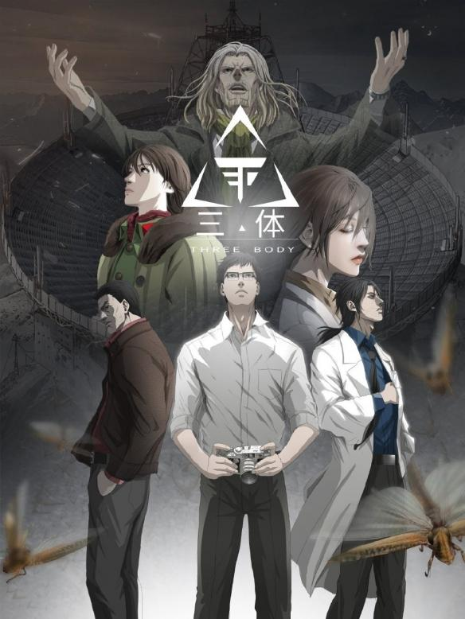
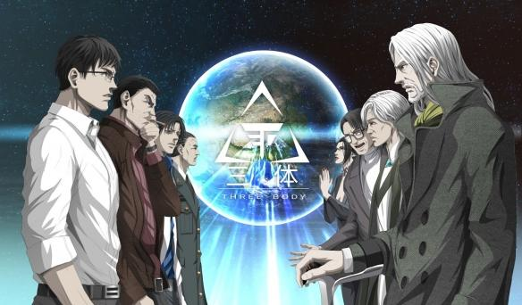

2019.10.10
刘慈欣小说《三体》的改编漫画现已在腾讯动漫上线“预告篇”，现可免费看此预告篇，11月将正式登录！
《三体》漫画官方海报发布，背景是红岸基地。
官方介绍：寻外星文明的绝秘计划“红岸工程”取得了突破性进展。因为一次看似重复了千百遍的动作，致使全人类命运被彻底改变。地球文明向宇宙发出的第一声啼鸣，以太阳为中心，以光速向宇宙深处飞驰。Liu Cixin's "Three Body" comic edition officially launched in November! On-line "Trailer".